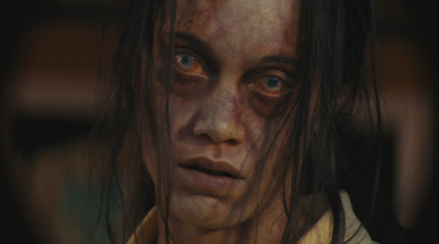
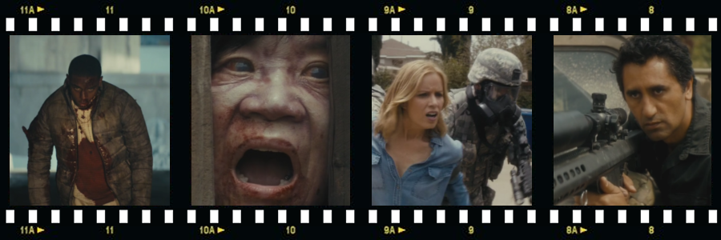

f you had one opportunity, one single, unique shot at travelling back in time in order to change the present for the better, where, and when, would you choose to go and what momentous event would you try to alter? Would you travel to the year 1939 and kill *Adolf Hitler* before his troops invaded Poland? To the year 2001 in order to avert the *Twin Towers Attack* in New York? To the year 1914 to stop the shooting of *Archduke Franz Ferdinand* of Austria, hoping that the World War I would never happen? Or, what if you could travel to the year 1963 and prevent the assassination of *John Fitzgerald Kennedy * – would you want to do that and would that change the present world for better? – that is the question which asks the limited 8-episode science fiction television series 11.22.63, based on the book of the same title by *Stephen King*, which takes its title from the date of Kennedy’s assassination.
The TV show was executive produced by *Stephen King* in cooperation with *J. J. Abrams*, who also produced it via his *Bad Robot Productions* company in collaboration with *Warner Bros. Television*. The series was filmed on various locations in Ontario, Canada, with the production later moving to Dallas, Texas to shoot there (no pun intended) the final scenes leading to the assassination at Dealey Plaza, and premiered on *Hulu* network in February 2016.
If you had an opportunity to prevent the assassination of John F. Kennedy, would you do it?
11.22.63 starts by high school teacher Jake Epping (*James Franco*) being befriended by the owner of the old local diner Al Templeton (*Chris Cooper*), who tells him about the secret time portal in the back of an old cupboard that leads back in time. The peculiarity of the portal is that it leads always to a single particular day – 21st October 1960. Additionally, if someone uses the portal, returns back to their original timeline, and then re-enters it, all events caused by the time traveller on his previous trip are erased – as if the space-time continuum resets to its original, undisturbed state.
Al becomes obsessed with the obvious opportunities presented by this chance find, particularly the possibility to find *Lee Harvey Oswald* (portrayed here excellently by *Daniel Webber*) and stop him from becoming not only the most infamous assassin in the history of United States but, arguably, the most infamous political killer to ever live.
The diner’s owner has undergone several expeditions to the 1960s, researching meticulously every move and every contact of Lee Harvey Oswald and John F. Kennedy, amassing an impressive collection of reference material on both the assassin and president, edging ever close to his goal, but an onset of cancer (apparently caused by spending prolonged periods of time in the past) eventually stopped him from achieving his objective. He also observed the tendency of time to ‘push back’ against any changes to the original timeline with the propensity to always revert back to the initial state by means of various, clearly more than coincidental, mishaps and incidents that were evidently designed to stop him from attaining his goals.
Realising that his end is near, Al briefs Jake on his findings, and, after persuading him on the worthiness of this mission, entrusts him with his cache of newspaper cuttings, flowcharts, diagrams and other assorted material from the 1960s, content that Jake will finish the job that he started.
Armed with Al’s research, Jake steps through the portal and, after some initial bemusement, makes himself quickly at home in the 1960s America. Back to the Future-style, he makes a living by illegal betting – as he obviously already knows the results of all major sport events that are yet to happen in this timeline.
Alas, Jake finds that, in accordance with what Al observed, the past is indeed ‘pushing back’ as unlikely accidents pile up after each other and make it difficult for him to achieve his goals. When he returns to his lodgings to find them burning and almost all Al’s notes destroyed, Jake very nearly gives up, but eventually decides to stay, to try and prevent a multiple murder he had heard about in his original timeline. The crime he is trying to prevent is the murder of the family of one of his future students by their father, an abusive alcoholic who had previously killed the sister, and her baby, of Bill Turcotte (*George MacKay*), who, realising that Jake is from the future, threatens to blow his cover story, unless Jake makes him his confidant and sidekick.
With Bill’s help, Jake moves to Fort Worth in Texas and finds a job as a teacher at a local school in the nearby satellite town, where he finds himself strongly attracted to a librarian, Sadie Dunhill (*Sarah Gadon*). Jake and Bill rent a room in the neighbourhood of Lee Harvey Oswald’s flat, and begin eavesdropping on his every conversation, after they have tapped his telephone and bugged his room.
Jake and Sadie’s relationship is developing further and becomes intimate, but is tested first by the return of Sadie’s abusive ex-husband, Johnny Clayton (*T. R. Knight*), who refuses to finalise their divorce., and then when Sadie discovers the tapes containing recordings of Oswald’s conversations in the basement of Jake’s house.
Jake seemingly regains control of the situation after he confronts Sadie’s ex-husband and appeases Sadie by made-up cover story, but things soon turn very nasty, when the mentally disturbed Clayton calls Jake and demands that he comes to Sadie’s house where he holds her hostage at gunpoint after disfiguring her with a knife. After Jake and Sadie finally overwhelm and kill Clayton, and Sadie is taken to a hospital in a critical condition, Jake decides to reveal to Sadie the whole truth about who he really is, where he is from and what is his mission.
With that danger averted, and Sadie recovering from her injuries, the whole Jake’s mission is suddenly under another threat, when he finds out that Bill, after having become infatuated with Oswald’s wife Marina (*Lucy Fry*) becomes Oswald’s best friend and reveals to him that his apartment is under surveillance. Fearing that Bill will become the alleged second shooter (referencing the *grassy knoll* conspiracy theory), Jake has him committed to a psychiatric hospital as his younger brother, where Bill’s insistence that Jake is not his elder brother but a time-traveller who came from the future, only reinforces the opinion of the doctors about his mental state.
After reassuring himself that, in his assassination plans, Oswald is acting alone and without CIA backing, Jake decides to kill him, to remove the threat he poses to the president once and for all. Alas, before he is able to act on his plan, his past catches up with him when he is severely beaten up by the infuriated bookie and his thugs, leaving him in coma.
When Jake finally wakes up from the coma mere days from the assassination date, suffering from amnesia and unable to remember anything about his objective, Sadie struggles to help him to recall his memories. In the hope that the encounter will jog Jake’s memory, she takes him to visit Bill in the mental institution, but the visit only causes Bill (who was in the meantime ‘cured’ from his time-travelling ‘delusion’) committing suicide by jumping out of the window, when Jake brings back Bill’s trauma by impelling him that he remembers who Jake really is, where he came from, and what his mission is.
With only hours left to the fatal event, Jake at last recovers his memory. On the day of the assassination, time’s tendency to ‘push back’ and prevent anybody from changing the course of history is particularly strong and Jake and Sadie find themselves struggling against the series of improbable incidents, clearly designed to stop them, all the way to *Dealey Plaza* and their final face-off with Lee Harvey Oswald at the sixth floor of the *Texas School Book Depository*. Jake accomplishes his mission in preventing the assassination, but Sadie dies during the confrontation. Jake is initially arrested and suspected from being Oswald's accomplice, but is eventually vindicated after being released from the custody and thanked by president Kennedy himself in a telephone call. However, while entering the time portal and making his return journey back to the present time, little he suspects what dire consequences his, relatively small, time-altering intervention will have on his original time line.

Although Stephen King’s works don’t always translate well to the TV format, the small-screen adaptation of 11.22.63 must be acknowledged, arguably, as a complete success, mainly due to James Franco’s frank (again, no pun intended) and unpretentious performance that makes you feel like you are watching a show ‘actually made’ in the 1960s, and his undeniable on-screen chemistry with the female lead *Sarah Gadon*, who is expertly portraying Jake’s love interest Sadie Dunhill.
TRIVIA: Filming of exterior scenes at Dealey Plaza in Dallas, Texas during rush hour caused bumper-to-bumper traffic jam in the surrounding streets.